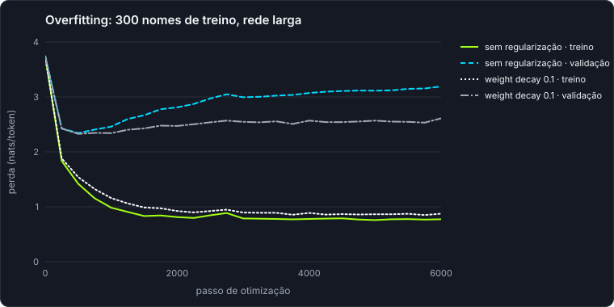

Java · Oracle PL/SQL · applied AI
I modernize legacy Oracle systems with AI that has to show its evidence.
Java and Oracle PL/SQL developer from Brazil, working on enterprise systems since 2020, including REST services for a large healthcare cooperative. I build multi-agent tools that migrate Oracle Forms to Spring Boot, where deterministic code extracts the facts and every AI step is checked before it counts.
legacy XML→analysis→business rules→architecture→Java→validated
Featured projects
Status reflects what runs today, not what is planned.
LIMIARoracle-migration-ai · Python · LangGraph · Claude
Working pipeline · in development
Oracle Forms and Reports hide years of business rules inside triggers and PL/SQL. Migrations fail when a rule is lost, or when one is invented. LIMIAR reads Forms/Reports exported as XML, reconstructs what the system does, designs a Spring Boot architecture and generates Java code that must pass independent validation. Anything the XML does not support is reported as missing, never guessed.
How it works
- 8 specialist agents orchestrated by a LangGraph state machine, with SQLite checkpointing and crash recovery
- Deterministic extraction before every AI step; Oracle metadata turned into database dependency contracts
- Eight validation layers with zero LLM calls, enforced by a test; the generating agent never validates itself
- LIMIAR Maintenance: Investigator → Developer → QA → Reviewer agents fix queued bugs; a PR opens only if 10 deterministic gates pass, and merge is always human
Verifiable evidence
- 3,057 tests passing on
master (local run, Oct 2026)
- CI runs the full suite on every push and pull request
- Reproducible gate demo: 9/9 scenarios (1 legitimate fix passes, 8 unauthorized changes blocked)
- A real end-to-end migration case study, with every verdict shown, including the failing ones
PythonLangGraphClaudePydanticpytestGitHub ActionsOracle FormsJava / Spring Boot
llm-do-zeroPython · NumPy · no autograd, no pretrained weights
v0.1 · MLP done · Transformer next
A character-level language model written from scratch to show how language models learn: tokenizer, embeddings, hand-derived backpropagation, AdamW, training and sampling. It learns to invent Brazilian town names from the 5,298 official names published by IBGE.
What is implemented
- Every backward pass checked against finite differences (relative error < 1e-6)
- Sequence-level train/validation/test split; test set evaluated once
- Five reproducible experiments: learning rate, context size, optimizer, overfitting, weight decay
Measured results
- Validation loss 1.84 nats/token vs. 2.39 for a count-based bigram and 3.74 for a uniform guess
- 37 tests; identical results across runs on the same machine
PythonNumPypytestGitHub Actions
Demos
Both run locally, with no API key and no cost.
LIMIAR Maintenance: the diff gate
The same check-diff command the pipeline runs on each agent's patch, applied to a throwaway clone.
$ python scripts/maintenance_gates_demo.py
PASS legitimate fix with regression test
BLOCKED developer edits the agent policy
BLOCKED QA edits production code
BLOCKED test disabled with @pytest.mark.skip
BLOCKED existing test deleted
BLOCKED credential-shaped token added
BLOCKED real Oracle driver imported
BLOCKED final diff without a regression test
9/9 scenarios with the expected result
Read the demo
llm-do-zero: watching a model overfit
Trained on only 300 names, training loss keeps falling while validation loss rises after step 500.

$ llmzero generate --run runs/default -n 4 --temperature 0.8
nossia
coronel mosal
guaporácia
timpo cochos
Skills
Grouped by what I use them for.
Backend
Java, Spring Boot, REST APIs, JPA, Angular
Oracle and data
Oracle PL/SQL, Oracle Forms and Reports, SQL tuning, PostgreSQL
AI engineering
Multi-agent systems with LangGraph and Claude, Claude Code agents, deterministic validation of AI output, neural networks in NumPy
Quality and delivery
pytest, Pydantic contracts, GitHub Actions, Git, Docker
Architecture and experiments
The decisions behind the code.
Experience
Enterprise work, mostly on systems that keep businesses running.
- Sep 2026 – now
Independent study and LIMIAR
Deepening modern Java and building AI-assisted development tools with Claude Code.
- Aug 2025 – now
PL/SQL Developer, Hapvida Notre Dame
Collaborating with the Support team to analyze and resolve incidents, while developing improvements and fixes for corporate applications. Developing and maintaining solutions using PL/SQL, Oracle Forms, and Oracle Reports, including implementing new features, fixing bugs, optimizing SQL queries, and enhancing performance. Supporting the Development team in analyzing issues and evolving applications.
- Jan 2025 – Jul 2026
PL/SQL Support Senior, Hapvida Notre Dame
Handled the analysis and resolution of incidents and service requests for the Authorization/Support team, addressing highly complex issues and performing bug fixes. Optimized SQL queries and Oracle Forms screens, focusing on enhancing application performance and stability. Managed and tracked the backlog, taking a proactive approach to identifying issues and reducing ticket volume.
- Apr 2022 – Sep 2024
Web Developer, Grupo Portfólio, for Unimed Fortaleza
Built Java REST services and Angular features for healthcare applications used by 1,000+ users, and maintained Oracle PL/SQL packages and procedures.
- Jul 2020 – Mar 2022
PL/SQL Developer, Wipro Technologies
Built Oracle Forms screens and Oracle Reports, tuned slow SQL queries and supported an internal legacy system.
Earlier Spring Boot practice projects
api_evEV battery and motor simulation API. Java 17, Spring Boot 3.3.
api_atendimentoRoutes support requests to teams with queueing. Java 17, Spring Boot 3.3.
gate-unlockUnlocks a gate from a user and access code. Java 21, Spring Boot 3.3, JPA.
api_semaforoTraffic light with auto cycle, manual override and audit log. Java 21, Spring Boot 3.3.